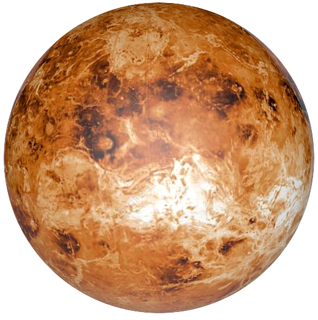

Venus

Es el segundo planeta más próximo al Sol y el más cercano a la Tierra. Venus es un planeta rocoso, sin satélites y sin anillos. Se trata de un planeta extremo, caliente, seco y con una presión en la superficie 90 veces superior a la terrestre. Es de hecho el planeta más caliente de todos.
Curiosamente, este planeta interno realiza una rotación en el sentido de las manecillas del reloj, es decir, de este a oeste. Completa su órbita alrededor del Sol en 224 días y 17 horas terrestres.
La atmósfera de Venus se compone en mayor proporción de dióxido de carbono, con nubes que presentan gotitas de ácido sulfúrico y cantidades muy pequeñas de agua. Es muy gruesa y densa, lo que ocasiona que después de la llegada del Sol a la superficie, el calor quede atrapado en el planeta.
Diámetro: 12,104 kilómetros.
Masa: 4.8673 x 1024 kilogramos.
Volumen: 928,415,345,893 km3.
Densidad: 5.243 g/cm3.
Temperatura superficial: 462 °C.